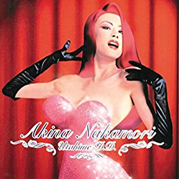

最佳专辑：第7张
发行年份：2002年
发行日期：12月4日
| 歌名 | 作词 | 作曲 | 编曲 |
|---|---|---|---|
| Double Decade Delivery #1 (伴奏) | 村田陽一 | 村田陽一 | |
| TATTOO | 森由里子 | 関根安里 | 村田陽一 |
| ミ・アモーレ〔Meu amor é･･･〕 | 康珍化 | 松岡直也 | 森村献 |
| TANGO NOIR | 冬杜花代子 | 都志見隆 | 武部聡志 |
| 北ウイング | 康珍化 | 林哲司 | 森村献 |
| SAND BEIGE -砂漠へ- | 許瑛子 | 都志見隆 | 千住明 |
| DESIRE -情熱- | 阿木燿子 | 鈴木キサブロー | 武部聡志・北原雅彦 (管乐編曲) |
| セカンド・ラブ | 来生えつこ | 来生たかお | 武部聡志 |
| 水に挿した花 | 只野菜摘 | 広谷順子 | 武部聡志 |
| 少女A | 売野雅勇 | 芹澤廣明 | 清水俊也・北原雅彦 (管乐編曲) |
| 駅 | 竹内まりや | 竹内まりや | 千住明 |
| 飾りじゃないのよ涙は | 井上陽水 | 井上陽水 | 村田陽一 |
| Double Decade Delivery #2 (伴奏) | 村田陽一 | 村田陽一 | |
| スローモーション | 来生えつこ | 来生たかお | 武部聡志 |
首发规格：CD: UMCK-1139
唱片公司：UNIVERSAL J
排行榜：Oricon公信榜专辑周榜第8位
再发行：2017年5月3日 - UHQCD: UPCH-7266